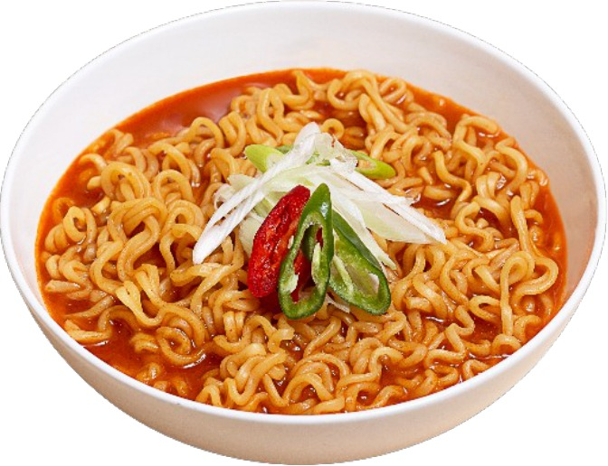
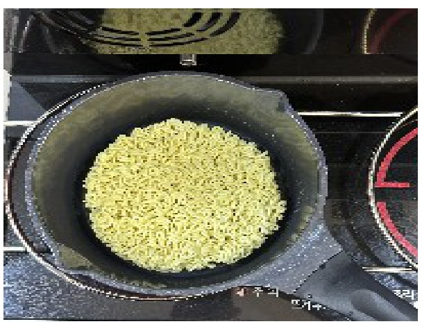
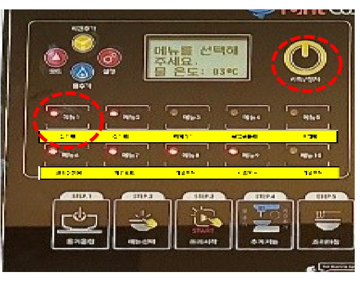
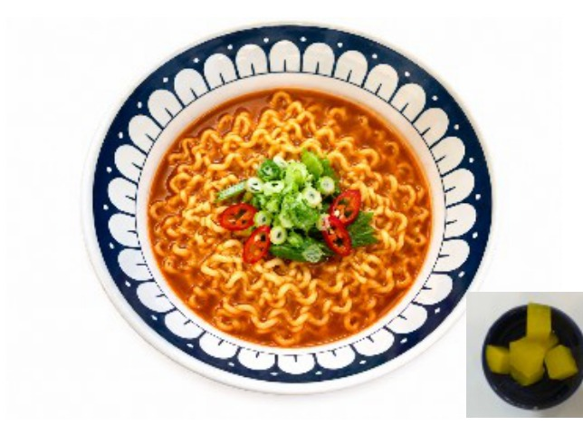
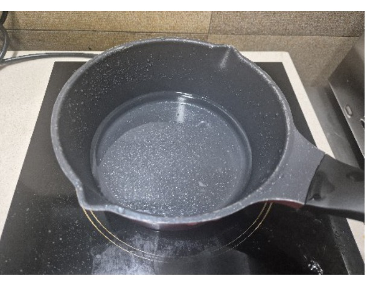
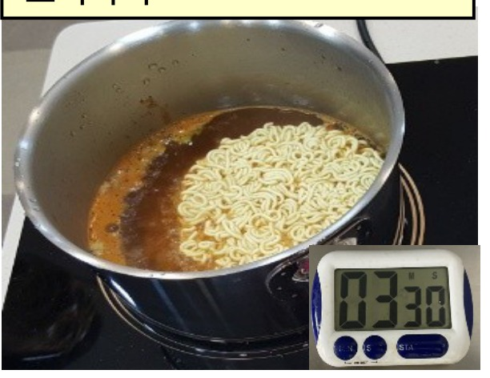
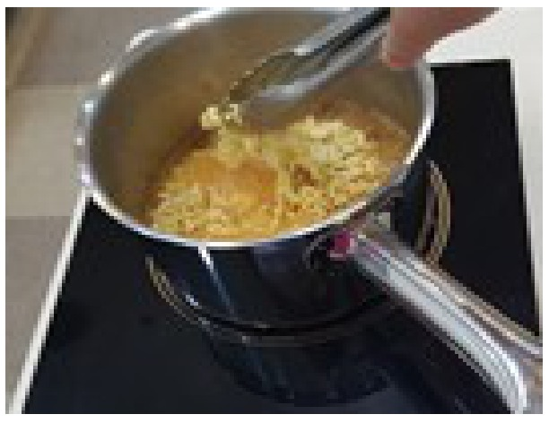
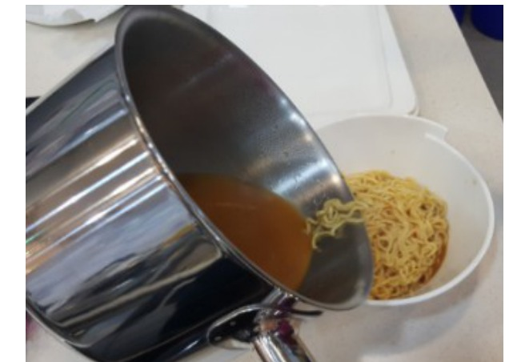
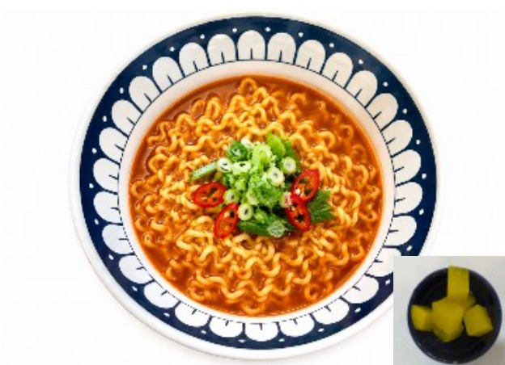

| 메뉴명 | 우지라면 |
|---|---|
| 판매가격 | 4,500원 |
| 원재료 | 우지라면 |
| 사용 부자재 | 라면용기 |
| 메뉴특징 | 소고기국물이 진한 매운 국물라면 |
※ 제조 후 최대한 빨리 제공할 것.



※ 기존 라면조리기 : [일반라면] 모드로 조리하기





※ 토핑추가 ※
▶ 계란 : 타이머 1분 남았을 때 넣기
▶ 만두 : 물 끓으면 넣기 (면 넣을 때)
▶ 치즈 : 그릇에 라면 옮겨 담은 뒤 마지막에 올려주기
(치즈 먼저 꺼내 놓지 않기)